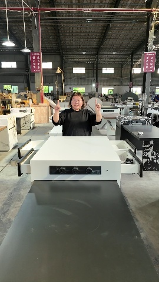
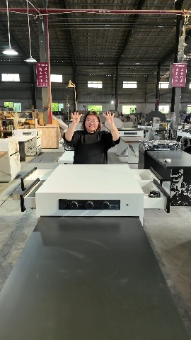
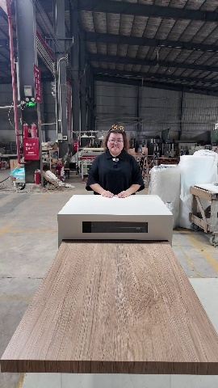
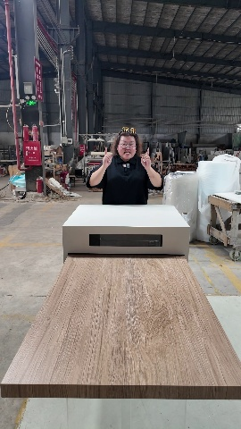
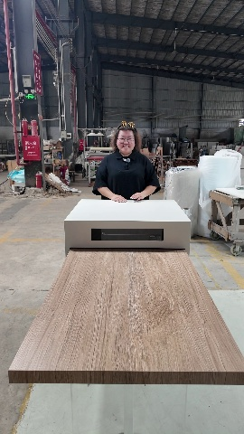
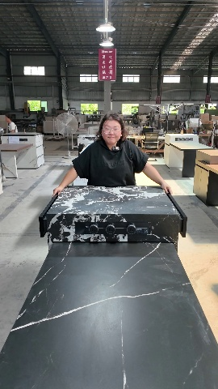
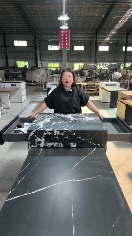
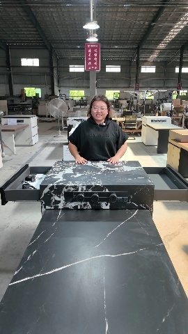
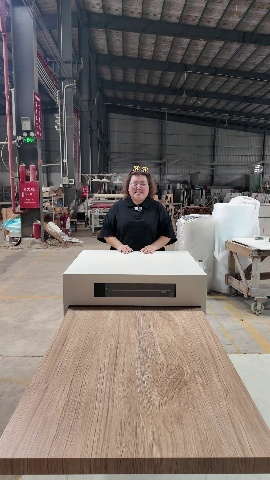
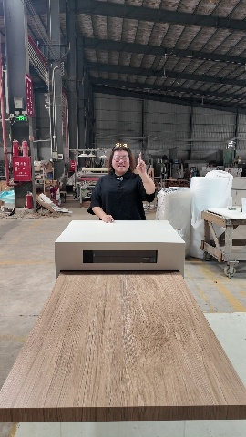
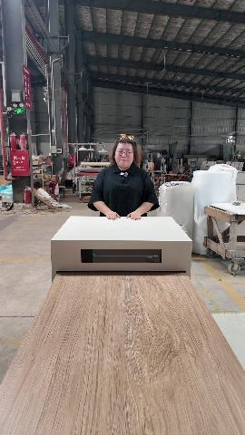
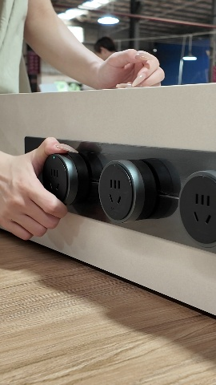


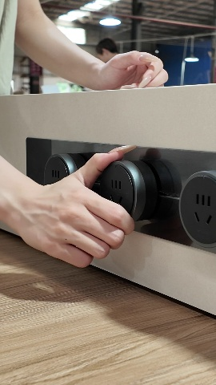
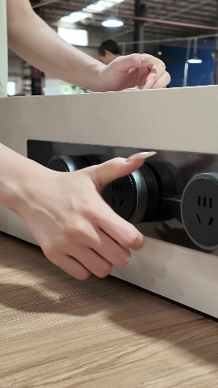
| media | 请求 | Verdict | 人工预期 | Mandatory | Reason | Cam px | roi_motion | 帧 |
|---|---|---|---|---|---|---|---|---|
| 89 | Action.EXTEND | Verdict.FAIL | EXTEND FAIL | {"target_object_visible": "PASS", "target_object_motion": "FAIL", "opposite_absent": "PASS"} | NO_TABLETOP_GEOMETRY_CHANGE | 5.71 | {"TABLETOP": 0.034} |   |
| 52 | Action.DRAWER_OPEN | Verdict.UNSURE | DRAWER_OPEN PASS/STRONG_UNSURE | {"target_object_visible": "PASS", "target_object_motion": "PASS", "opposite_absent": "PASS", "direction": "UNSURE", "state_transition": "UNSURE"} | TARGET_OBJECT_MOTION_BUT_DIRECTION_UNPROVEN | 46.82 | {"DRAWER": 0.092} |    |
| 109 | Action.DRAWER_OPEN | Verdict.FAIL | OPEN_STATE TRUE / ACTION FAIL | {"target_object_visible": "PASS", "target_object_motion": "FAIL", "opposite_absent": "PASS"} | NO_DRAWER_MOTION | 6.73 | {"DRAWER": 0.048} |    |
| 51 | Action.EXTEND | Verdict.UNSURE | STATIC; EXTEND FAIL | {"target_object_visible": "PASS", "target_object_motion": "PASS", "opposite_absent": "PASS", "direction": "UNSURE", "state_transition": "UNSURE"} | TARGET_OBJECT_MOTION_BUT_DIRECTION_UNPROVEN | 31.43 | {"TABLETOP": 0.096} |    |
| 1985 | Action.EXTEND | Verdict.UNSURE | SOCKET_ADJUST; EXTEND FAIL | {"target_object_visible": "PASS", "target_object_motion": "PASS", "opposite_absent": "PASS", "direction": "UNSURE", "state_transition": "UNSURE"} | TARGET_OBJECT_MOTION; MODEL_DIRECTION_MATCH; STATE_TRANSITION_INCOMPLETE | 11.66 | {"TABLETOP": 0.149} |  |
| 1986 | Action.EXTEND | Verdict.UNSURE | SOCKET_ADJUST; EXTEND FAIL | {"target_object_visible": "PASS", "target_object_motion": "PASS", "opposite_absent": "PASS", "direction": "UNSURE", "state_transition": "UNSURE"} | TARGET_OBJECT_MOTION; MODEL_DIRECTION_MATCH; STATE_TRANSITION_INCOMPLETE | 11.66 | {"TABLETOP": 0.149} |   |
结论: 无假 PASS; 89/109 正确 FAIL; 52 抽屉动作候选 UNSURE; 51/1985/86 保守 UNSURE(方向/对象未证) — 详见报告局限。